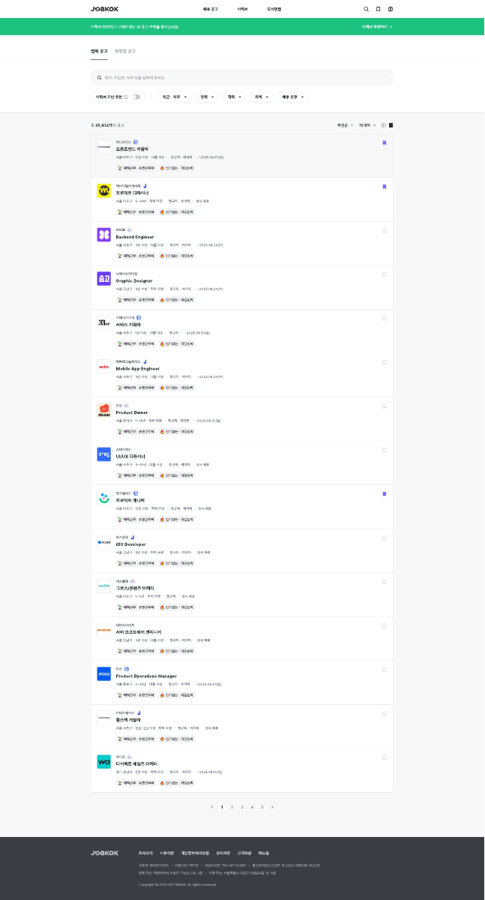

잡콕은 AI 기반 인재 매칭과 모의면접을 결합해 고도화한 구인구직 플랫폼입니다.
영상·음성 기반 AI HR 분석 기술을 활용해, 기업이 구직자의 모의면접 영상을 직접 확인하고
AI 분석 리포트를 근거로 인재를 선별할 수 있습니다.
글로벌 HR 테크 시장은 연평균 10% 이상의 성장률을 기록하며 AI·데이터 기반 채용 솔루션 도입이 빨라지고 있습니다.
잡콕은 이 흐름에 맞춰 AI 기반 인재 추천과 면접 분석으로 인재 선발의 효율을 높이고 채용 비용 절감에 기여하는 것을 목표로 했습니다.
이 프로젝트는 지역혁신 실증 스케일업 정부과제로 진행됐습니다.
기업과 구직자가 실제로 참여하는 실증 과정이 전제였기 때문에,
데모용 화면이 아니라 처음부터 실사용을 견디는 화면을 만드는 것이 조건이었습니다.
담당 역할
프론트엔드 UI/UX 개발과 백엔드 연동을 맡았습니다.
Java Spring 기반 MVC 웹 애플리케이션 개발화면과 컨트롤러를 함께 다루며 서버 렌더링 구조 위에서 UI를 구성했습니다.
사용자 인터페이스 설계 및 반응형 웹 구현구직자·기업 양쪽 화면을 데스크톱과 모바일에서 함께 쓸 수 있도록 만들었습니다.
AI 모의면접 시스템 프론트엔드 구현응시 진입, 진행 상태, 결과 리포트 확인까지의 화면을 담당했습니다.
이력서 작성 지원 및 키워드 추천 UI 개발학력·경력을 입력하면 희망 직무와 보유 스킬 키워드를 추천받는 화면을 구현했습니다.
채용 공고 검색·필터링 시스템 구현직무·지역·경력·학력·급여 등 다중 조건을 조합하는 검색 화면을 만들었습니다.
구직자 흐름
구직자 쪽 화면은 이력서 작성 → 모의면접 응시 → 공고 탐색이 끊기지 않고 이어지도록 묶었습니다.
세 기능이 각각 따로 있는 서비스가 아니라, 앞 단계의 결과가 뒤 단계의 입력이 되는 구조입니다.
이력서 등록 및 작성 지원
키워드 추천 — 학력·경력을 기반으로 희망 직무와 보유 스킬 키워드를 제안합니다.
제목·자기소개서 작성 지원 — 항목별로 무엇을 쓰면 되는지 안내를 붙였습니다.
공개 범위 설정 — 이력서와 면접 영상·리포트를 각각 공개할지 고를 수 있습니다.
AI 모의면접
이력서 기반 질문 — 등록한 이력서를 근거로 맞춤형 질문을 받습니다.
표정·음성·내용 분석 — 응시 결과를 분석해 면접 평가 리포트를 자동 생성합니다.
피드백 확인 — 역량 평가와 개선점을 리포트에서 확인합니다.
채용 공고 탐색
통합 검색 — 직무·지역·경력·학력·급여를 조합한 다중 필터를 제공합니다.
조건 검색 — 기업 규모, 연차 등 세부 조건으로 범위를 좁힐 수 있습니다.
정렬과 페이지 이동 — 목록 상단에 정렬 기준과 표시 방식을 두고, 하단에 페이지 이동을 뒀습니다.
공고 목록은 한 줄에 담아야 하는 정보가 많습니다.
기업 로고, 직무명, 지역·경력·학력·급여, 마감일, 스크랩 여부가 모두 한 카드에 들어갑니다.
그래서 직무명만 크게 두고 나머지는 한 단계 작은 회색 텍스트로 눌러,
훑어볼 때 직무명 줄만 따라 읽히도록 위계를 잡았습니다.

공고 목록 전체 화면. 검색·필터 → 목록 → 페이지 이동 순서.
기업 흐름
기업 쪽은 구직자가 남긴 결과물을 보고 판단하는 화면입니다.
공고를 올리고, 지원자를 모으고, AI 분석 리포트로 비교하는 순서로 구성했습니다.
공고 관리 — 채용 공고를 등록·수정·삭제합니다.
지원자 관리 — 지원자의 이력서와 면접 영상을 확인합니다.
AI 분석 리포트 — 지원자별 면접 분석 결과를 함께 봅니다.
구직자가 공개 범위를 직접 정하는 구조이기 때문에, 기업 화면에서는
공개된 항목과 비공개 항목이 섞여 있을 때를 기본 상태로 두고 만들었습니다.
비어 있는 항목이 오류처럼 보이지 않도록 안내 문구를 넣었습니다.
실증 효과
정부과제 실증 과정에서 정리된 기대 효과는 다음과 같습니다.
경제적 효과
기업과 구직자를 대상으로 한 실증 과정에서 초기 고객 확보와 서비스 개선 기회를 만들어,
빠른 시장 진입과 매출 기반 마련을 실현했습니다.
산업적 효과
실증을 통해 다양한 산업군의 서비스 수요를 검증하고,
HR 테크 시장뿐 아니라 관련 분야로의 확장 가능성을 확보했습니다.
사회적 효과
기업과 구직자가 직접 실증에 참여함으로써 서비스의 신뢰성과 공정성을 입증하고,
채용 과정의 투명성을 높였습니다.
기술적 효과
다양한 채용 환경에서 데이터를 수집·분석해 알고리즘 성능을 지속적으로 개선하고,
실증 과정에서 모인 채용·면접 데이터를 바탕으로 기업이 채용 전략을 세우고 인재 관리를 최적화할 수 있도록
데이터 기반 인사이트를 제공합니다.
위 내용은 과제 계획서에 정리된 기대 효과입니다.
실증 참여 기업 수나 채용 성과 같은 수치는 제가 확인한 자료가 없어 적지 않았습니다.
기술 스택
이미 Java Spring으로 서버가 잡혀 있는 과제였기 때문에, 별도 SPA를 얹지 않고
서버 렌더링 구조 안에서 화면을 만드는 방식을 택했습니다.
화면과 컨트롤러를 같이 다루면 검색 조건이나 공개 여부처럼 서버 상태에 붙은 UI를 맞추기가 수월했습니다.
Java Spring · Spring MVC · Spring Security
HTML5 · CSS3 · JavaScript · jQuery
Bootstrap
MySQL · MyBatis
RESTful API
AI 면접 분석 API
Apache Tomcat · Nginx
정리
잡콕은 구직자와 기업이 같은 데이터를 서로 다른 목적으로 보는 서비스입니다.
구직자에게는 “내가 무엇을 더 채워야 하는지”, 기업에게는 “이 지원자를 왜 봐야 하는지”가 보여야 합니다.
같은 이력서와 같은 면접 리포트를 두 화면에서 다르게 배치하는 일이 이 프로젝트의 실질적인 작업이었습니다.